Aktuálna ponuka
Nehnuteľnosti, ktoré ponúkam
12 nehnuteľností na predaj a prenájom. Vyberte typ, alebo napíšte lokalitu.
12 z 12 ponúk
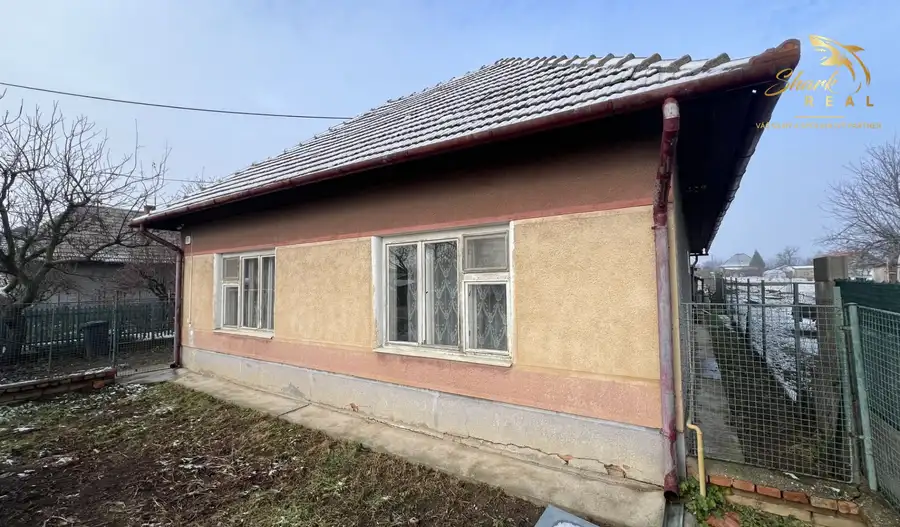
DomNové10 88 500 €Rodinný dom s 20á pozemkom v obci Semerovo Semerovo 120 m² Shark real Vám ponúka na predaj 3 izbový rodinný dom v obci Semerovo okres Nové Zámky. RD s podlahovou plochou cca 90m2 je postavený na slnečnom a…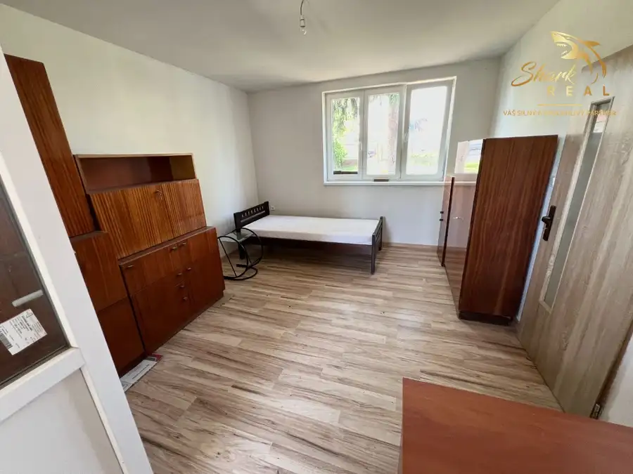
DomNové10 99 900 €Rodinný dom po rekonštrukcií obec Čata / Levice Čata 88 m² Ponúkame Vám na predaj 3 izbový rodinný dom v obci Čata okres Levice. Dom s podlahovou plochou 88m2 je postavený na pozemku s rozlohou 1478m2 a je po…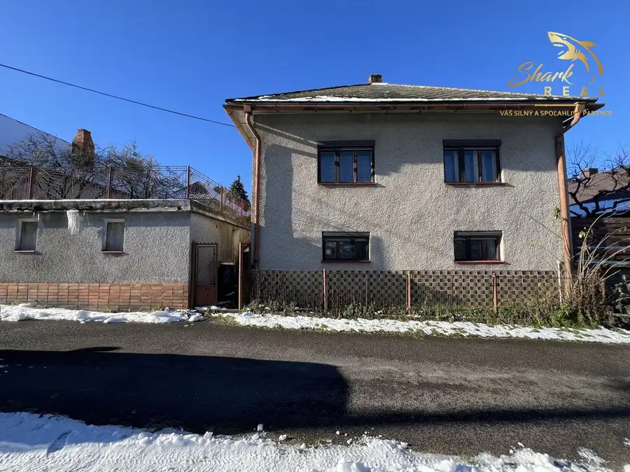
DomNové10 83 999 €Rodinný dom s garážou. Veľká Lehota 100 m² IBA U NÁS - Ponúkame Vám na predaj 3 izbový rodinný dom v obci Veľká Lehota okres Žarnovica. Dom s podlahovou plochou cca 100m2 je postavený na…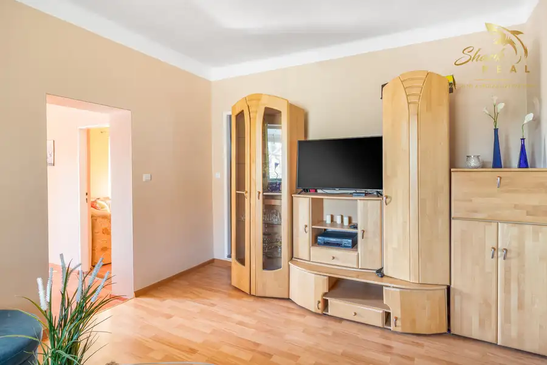
Dom10 149 999 €Útulný 4 izbový dom na predaj Radava 140 m² Shark real Vám ponúka na predaj útulný a presvetlený 4 izbový rodinný dom v obci Radava okres Nové Zámky. Dom s podlahovou plochou cca 140m2 je…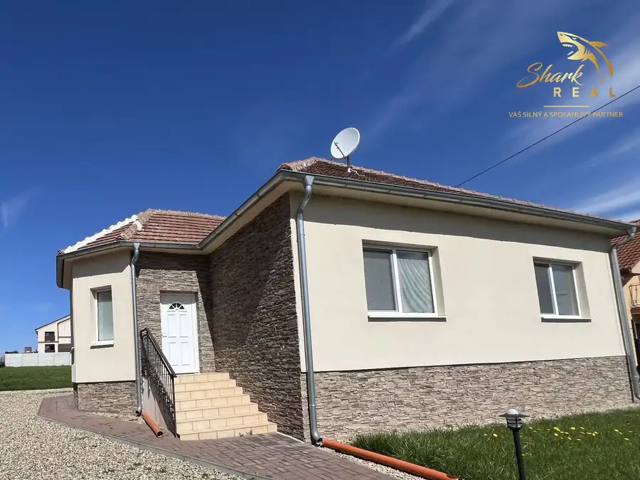
Dom10 165 900 €Predaj 4 izbový rodinný dom Podhájska 110 m² Shark real Vám ponúka na predaj zrekonštruovaný 4 izbový rodinný dom s pekným, udržiavaným a slnečným pozemkom v kúpeľnej obci Podhájska okres Nové…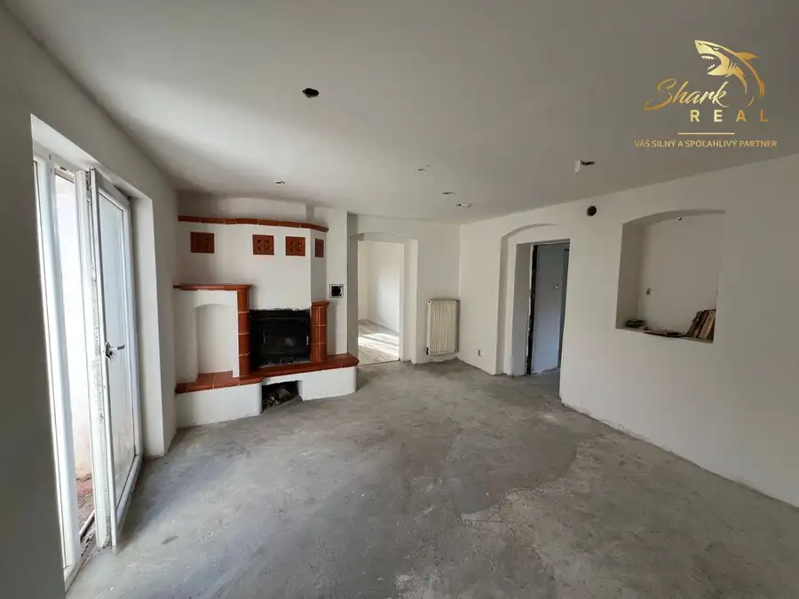
Dom10 69 999 €ZNÍŽENÁ CENA! - Rodinný dom ideálny na chalupu v obci Malá Lehota Malá Lehota 95 m² Shark real Vám ponúka na predaj 4 izbový rodinný dom vhodný aj na chalupu v peknom a pokojnom prostredí dedinky Malá Lehota okres Žarnovica. Táto…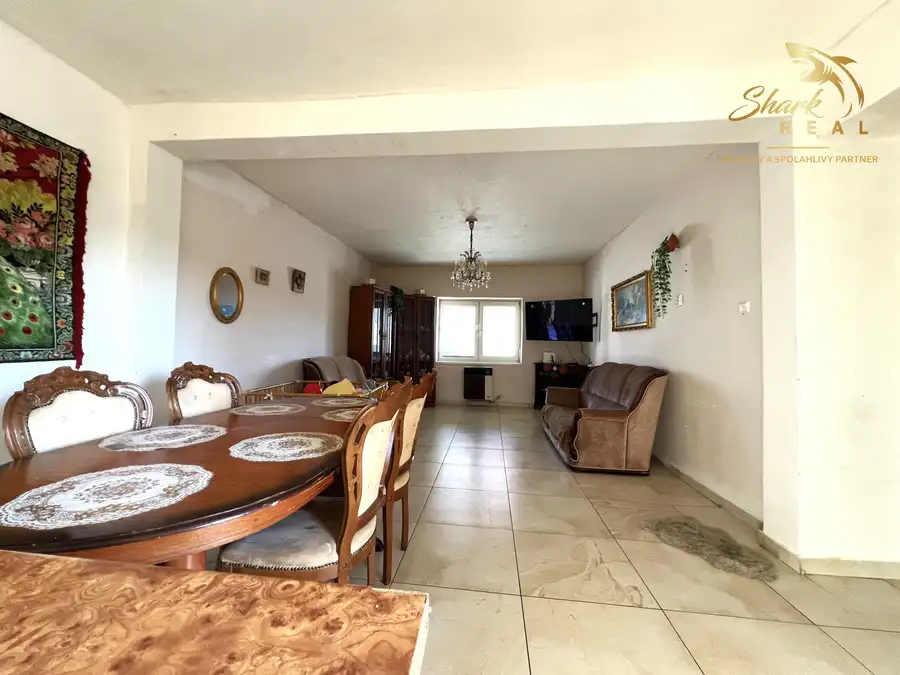
Dom10 89 990 €Rodinný dom Terany 100 m² Ponúkame Vám na predaj 4 izbový rodinný dom s pekným rovinatým pozemkom v obci Terany okres Krupina. Obec Terany sa nachádza len 4km od kúpeľného…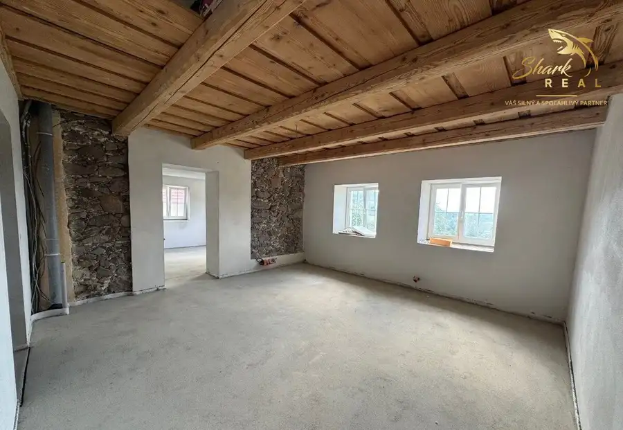
Dom10 239 999 €EXKLUZÍVNE - Jedinečná nehnuteľnosť s výhľadom na okolitú prírodu Malá Lehota 130 m² Shark real Vám ponúka exkluzívne na predaj zrekonštruovaný Rodinný dom - krásnu chalupu v okrajovej časti obce Malá Lehota okres Žarnovica.Dom s…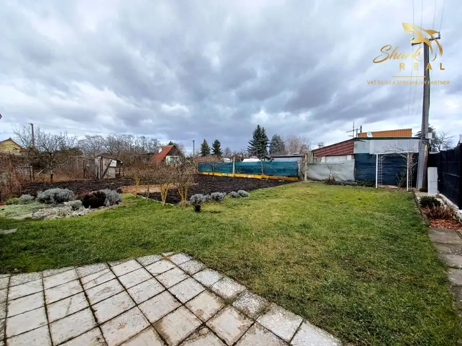
Záhradná chatka7 51 999 €Pekná záhrada s chatkou, terasou a krbom na okraji mesta. Levice 30 m² Ponúkame Vám na predaj záhradu s chatkou, ktorá sa nachádza v okrajovej časti mesta Levice na slnečnom a rovinatom pozemku s rozlohou 400 m2. Pozemok…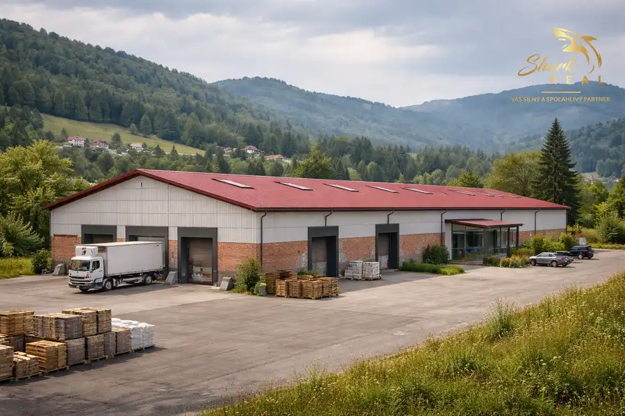
Komerčné priestory 599 999 €Výrobná hala v okrese Lučenec Lučenec 1800 m² Ponúkame Vám na predaj priemyselný objekt ( výrobnú halu ) s kancelárskymi priestormi. Hala s rozlohou do 400m2, ktorá sa nachádza neďaleko okresného…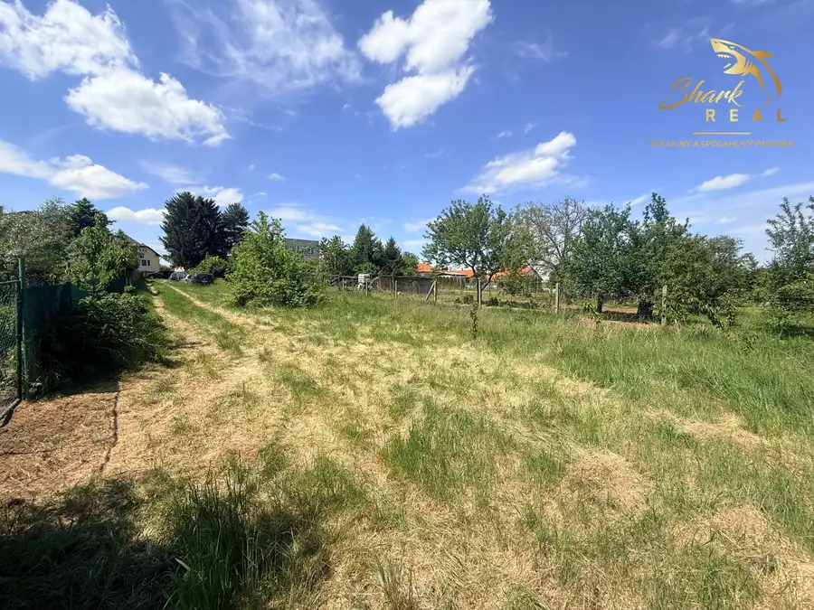
Pozemok4 Cena dohodouZnížená cena - pozemok na stavbu RD v obci Veľký Ďur Veľký Ďur 1000 m² Shark real Vám ponúka na predaj pekný slnečný pozemok v pokojnej časti obce Veľký Ďur okres Levice. Pozemok s rozlohou 800m2 sa nachádza len 3 minúty…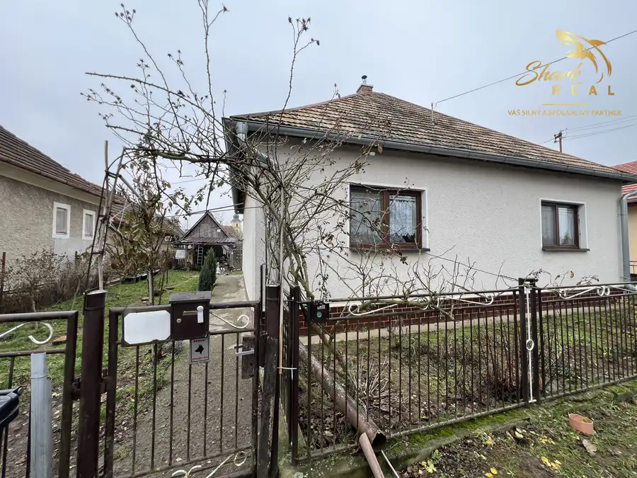
DomPredané10 PredanéPriestranný a udržiavaný 5 izbový rodinný dom na okraji obce Hokovce 140 m² Shark Real Vám ponúka na predaj 5 izbový rodinný dom na okraji obce Hokovce okres Levice. Tento dom ponúka možnosť dvojgeneračného bývania, poskytuje…Tomuto výberu zatiaľ nezodpovedá žiadna ponuka. Napíšte mi, čo hľadáte.